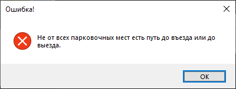

Для создания парковки необходимо выбрать в главном меню пункт «Создать парковку» (рисунок 1).
Рисунок 1 – Главное меню
В появившемся окне задания размеров парковки (рисунок 2) ввести ее размеры в указанных пределах, после чего по нажатию кнопки «Далее» будет осуществлен переход на форму конструирования парковки. Если указанные размеры парковки не входят в диапазон значений, указанных на форме ввода этих размеров, будет выведено сообщение об ошибке.
Рисунок 2 – Форма задания размеров парковки
На форме создания парковки (рисунок 3) можно взять любой из расположенных в левом верхнем углу формы шаблонов (грузовое парковочное место, легковое парковочное место, въезд, выезд, касса, газон) посредством клика мыши по ним и, удерживая кнопку мыши, переместить шаблон на любую клетку в поле конструирования, находящееся в правой части формы. При этом въезд, выезд и кассу можно использовать только один раз.
Рисунок 3 – Форма создания парковки
Посредством двойного клику мыши по размещенному на поле шаблону можно удалить его с поля конструирования. По нажатию кнопки «Очистить» произойдет удаление всех размещенных на поле конструирования шаблонов.
Пример созданной парковки приведен на рисунке 4.
Рисунок 4 – Пример созданной парковки
По нажатии кнопки «Проверить и сохранить» происходит проверка корректности созданной парковки, которая в случае неудачи завершается выводом сообщения об ошибке (рисунок 5). Парковка не проходит проверку корректности в следующих случаях:
В случае же успешного завершения проверки корректности парковки выводится сообщение об ее успешном сохранении. Теперь созданную парковку можно использовать в процессе моделирования.
Рисунок 5 – Сообщение о некорректной парковке
В случае успешного завершения проверки корректности парковки появляется возможность ее сохранения в базу данных (БД). При нажатии на кнопку «Сохранить в базе данных» пользователь может ввести название для парковки и сохранить ее в БД по нажатию кнопки «Сохранить» (рисунок 6).
Рисунок 6 – Форма сохранения парковки в БД
Вернуться к оглавлениюПри нажатии в главном меню приложения на кнопку «Загрузить парковку» будет осуществлен переход на соответствующую форму, где списком отображаются названия всех имеющихся в БД парковок. При выборе одной из них (посредством клика мышью по ее названию в списке названий) и нажатии кнопки «Загрузить» (рисунок 7) данная парковка будет использоваться в процессе моделирования. С помощью кнопки «Назад» можно вернуться в главное меню.
Рисунок 7 – Форма загрузки парковки
Вернуться к оглавлениюПри нажатии в главном меню приложения на кнопку «Параметры моделирования» будет осуществлен переход на соответствующую форму, где можно ввести все параметры моделирования в пределах, указанных рядом с полями ввода. Примеры формы параметров моделирования приведены на рисунках 8 и 9.
Рисунок 8 – Форма задания параметров моделирования (пример 1)
Рисунок 9 – Форма задания параметров моделирования (пример 2)
При нажатии кнопки «Сохранить» введенные параметры моделирования будут использованы в процессе моделирования. В случае некорректно введенных параметров по нажатии кнопки «Сохранить» будет выведено соответствующее сообщение об ошибке (примеры – на рисунках 10 и 11).
Рисунок 10 – Сообщение об ошибке (пример 1)
Рисунок 11 – Сообщение об ошибке (пример 2)
При выборе типа транспортного потока и типа времени стоянки автомобилей нужно выбрать один из двух вариантов: «Детерминированный» или «Случайный». При выборе варианта «Детерминированный» необходимо указать интервал.
В случае выбора варианта «Случайный» в обеих случаях можно выбрать один из трех законов распределения (ЗР): нормальный, равномерный или экспоненциальный (показательный).
При выборе нормального ЗР необходимо указать математическое ожидание MX и дисперсию DX.
При выборе равномерного ЗР необходимо указать левую границу Min и правую границу Max.
При выборе экспоненциального ЗР необходимо указать интенсивность λ.
Вернуться к оглавлениюПри нажатии в главном меню приложения на кнопку «Запустить моделирование» будет осуществлен переход на соответствующую форму, где будет происходить процесс моделирования работы созданной или загруженной платной парковки с заданными параметрами моделирования. Если параметры моделирования не заданы, то будут использоваться параметры по умолчанию. В случае, если парковка не задана или не загружена, будет выведено сообщение об ошибке, приведенное на рисунке 12.
Рисунок 12 – Сообщение об отсутствии парковки
В левой части формы моделирования есть ползунок, с помощью которого можно ускорить процесс моделирования в 2 или 4 раза, а также кнопки, позволяющие приостановить его (кнопка «Пауза») и возобновить (кнопка «Пуск»). При нажатии кнопки «Стоп» процесс моделирования будет завершен с осуществлением перехода в главное меню.
В левой части формы также находится «информационное табло» с данными о текущем модельном времени, общей выручке платной в данный момент времени, а также таблица, в которой для каждого из припарковавшихся автомобилей указывается его порядковый номер, время заезда, время выезда и то, сколько он должен заплатить.
В правой части формы находится поле визуализации работы платной парковки. По дороге внизу поля парковки справа налево движутся автомобили с интервалами, определяемыми параметрами моделирования транспортного потока. С заданной вероятностью автомобили заезжают на определенное парковочное место и стоят на нем в течение промежутка времени, определяемого параметрами моделирования времени стоянки автомобилей, после чего автомобили уезжают с парковки. Когда автомобиль заезжает на парковочное место, в таблице в левой части формы добавляется новая строка с данными об этом автомобиле. Пример формы моделирования представлен на рисунке 13.

Рисунок 13 – Форма моделирования
Вернуться к оглавлению